概率之眼
第一章 · 绝境入局
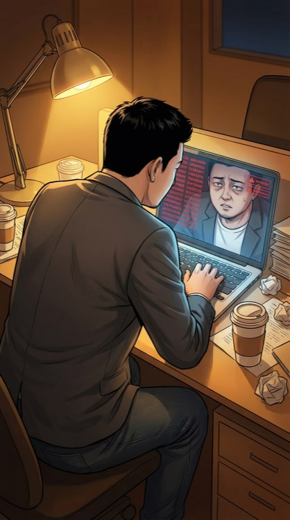
账户余额：347,891元。旁边跳着"本月工资发放提醒"。我盯着屏幕，觉得这些数字比任何恐怖片都吓人。
七天。这些钱只够再撑七天。之后呢？十二个跟着我拼命的兄弟，连最后一个月工资都发不出。
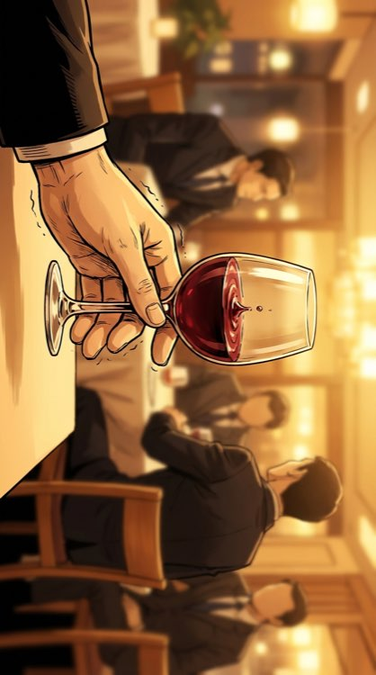
一个月前，某顶级基金合伙人的私人饭局。我穿了唯一一套像样的西装。
"朱总啊，AI赛道太卷了，我们内部评估后决定……退出这轮。"
我记得自己端着红酒杯的手在发抖。不是因为愤怒——是因为那瓶拉菲比我账上余额还贵。
"江哥！有个路子，一晚上就能翻盘。"张伟的声音像打了三倍浓缩。
"你说的不是传销吧？"我看着窗外的万家灯火，那些灯每一盏背后的人，大概都不用担心发不出工资。
"赌局。地下的。高端的那种。江哥你脑子好使，算概率跟喝水似的，去了就是捡钱。"
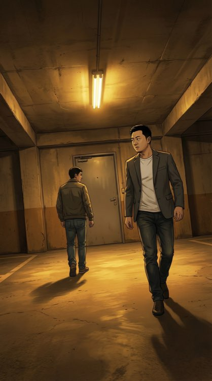
跟着张伟走进一个地下停车场。尽头是一扇锈迹斑斑的铁门。
"你确定这不是器官交易？"我认真地问，"因为我的肝可能不太值钱，这几个月喝的比较多。"
张伟白了我一眼："你能不能正经点？进去以后别丢我脸。"
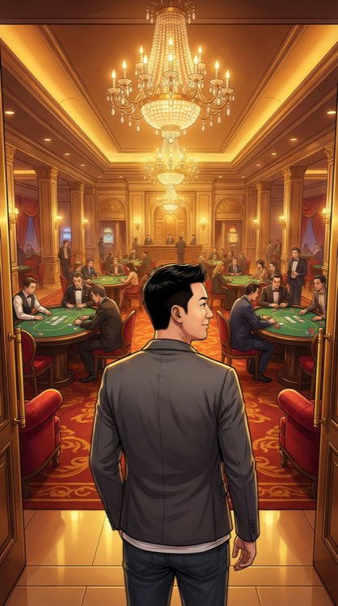
铁门打开的一瞬间，我以为自己穿越了。
水晶吊灯、意大利真皮沙发、穿黑色制服的荷官在每张台子后面安静地洗牌。空气里弥漫着雪茄和某种昂贵香水的味道。
这地方的装修费够我给团队发三年工资。
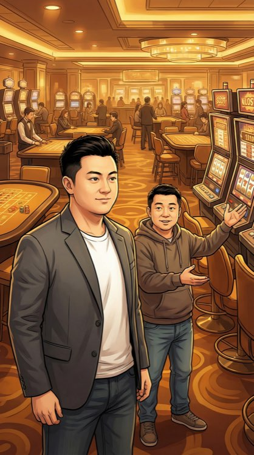
张伟拉着我在入口处站定："你要参加什么级别的？万元桌比较稳，百万桌……才有可能救你公司。"
▸ 抉 择 ◂
百万桌。要么不做，要么全力以赴。
我这辈子就没选过"稳妥"这个选项。创业如此，今晚也如此。
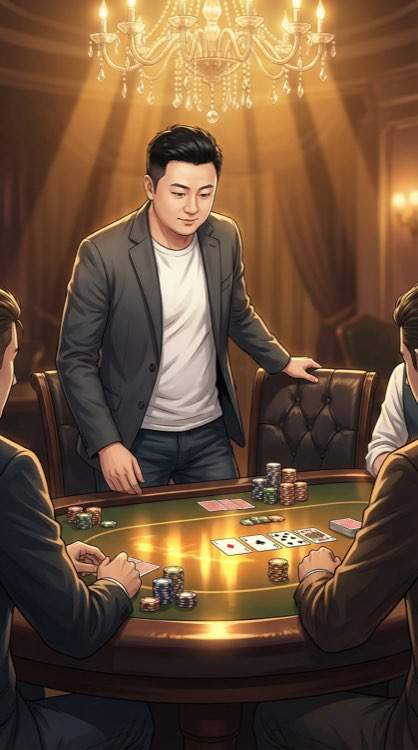
百万桌。绿色毛毡台面、精致的筹码塔。我拉开椅子坐下，假装自己经常来的样子。
心跳一百四。面部表情管理：启动。
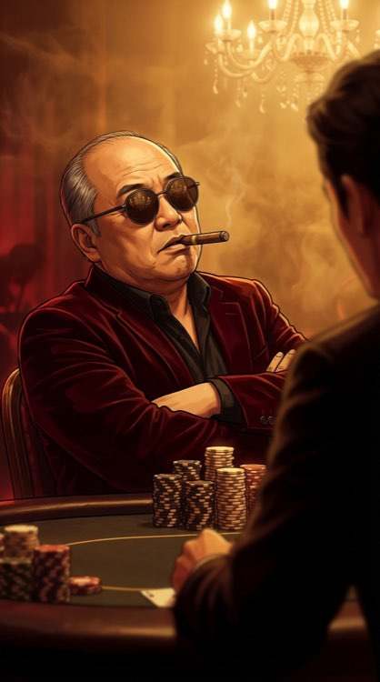
对面坐着一个男人。秃顶、两鬓花白、圆框墨镜、嘴里叼着一根没点燃的雪茄。周身散发着"我很有钱而且我不在乎"的气场。
所有人都叫他"老K"。这个名字在德州扑克里是个不错的双关。
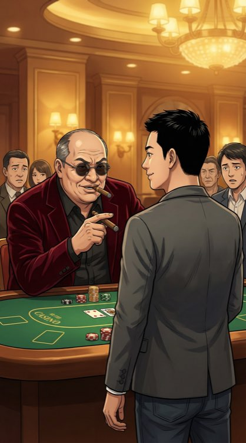
"新面孔？"老K用雪茄指着我，声音像砂纸磨过橡木，"让我猜猜——创业失败的？"
"还没失败呢。"我微笑，尽量让这个笑容看起来自信而非绝望。
区别在于：创业失败是过去时。而我现在正在失败的路上，进行时。
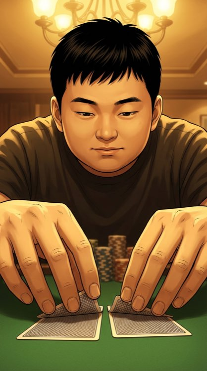
第一手牌发下来。我微微掀起一角——
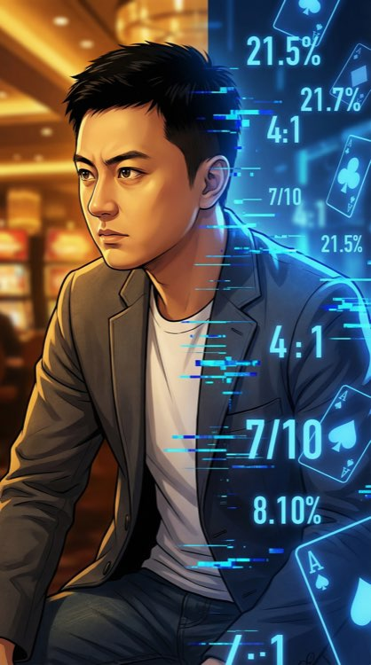
然后它启动了。
那种感觉很难形容。像是脑子里突然打开了一个调试窗口——数字开始在视野里飘浮。胜率：43.7%。每张可能出现的公共牌，每种组合的概率，像代码一样在我脑中流动。
我管这个叫"概率之眼"。从小就有。写代码那些年，它变得越来越精确。
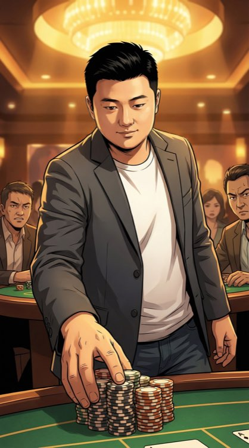
跟注。不多不少，刚好表达"我在认真玩但我不着急"。
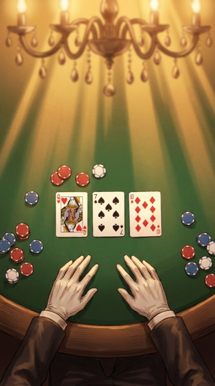
翻牌：A♠ K♦ 7♣。
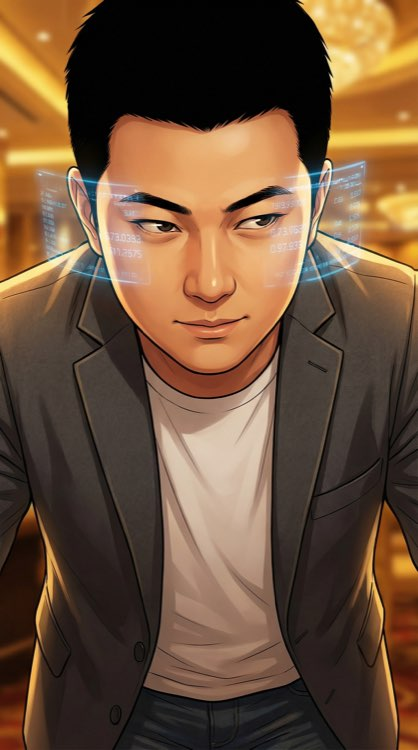
脑中数字疯狂跳动。胜率飙升：68.2%。血压上来了，但我脸上纹丝不动。手指在桌下不自觉地敲键盘——这是写代码时的习惯。
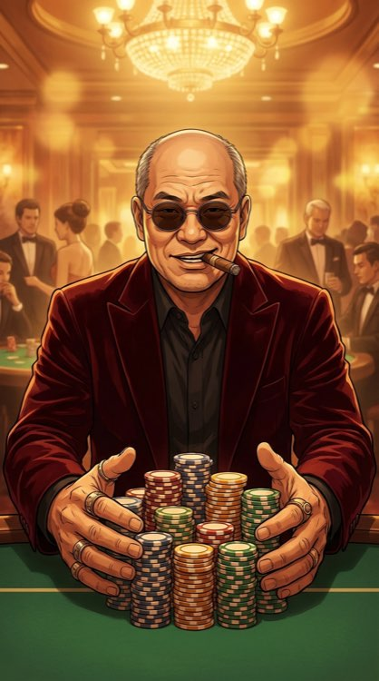
老K推了一座筹码山到桌中央。五十万。
"加注。"他连看都没看牌，眼镜后面的眼睛大概正在研究我。
全桌六个人的目光刷地转向我。
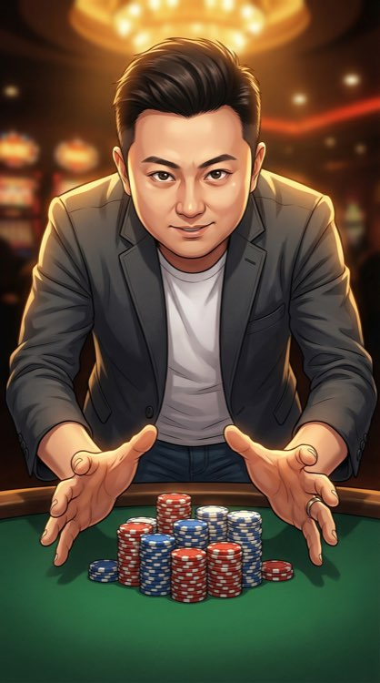
脑中的数字说：68%。三分之二的概率赢。
▸ 抉 择 ◂
All in。概率超过60%就干——这是我创业时定下的规矩。
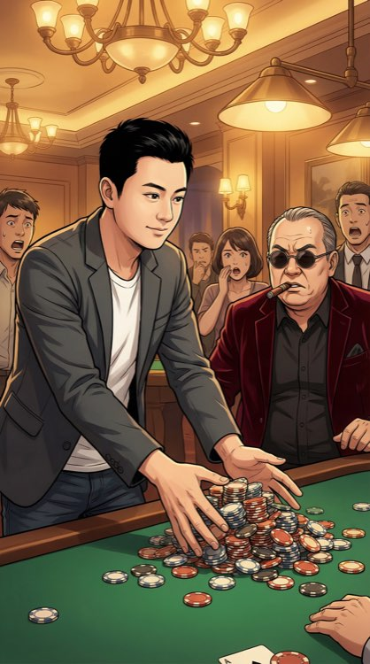
"全下。"
我把所有筹码推向桌面中央。动作平稳，呼吸均匀——至少外表是这样。
内心独白：如果输了，我不仅付不起工资，连回家打车的钱都没有。
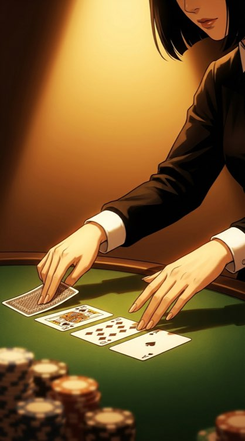
老K挑了下眉毛——跟注。转牌翻开：Q♥。
72.4%。概率还在涨。呼吸放慢。这手牌，稳了？
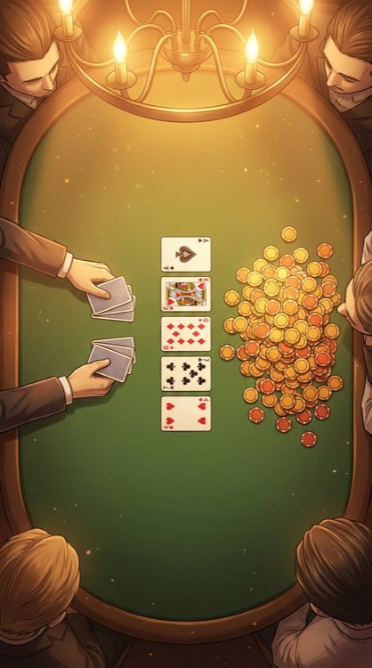
河牌。荷官的手指捏住最后一张牌的边缘，翻开——
10♠。同花顺。
全桌安静了三秒。
我开始收筹码，一枚一枚码好，像在整理代码仓库一样有条不紊。
这手同花顺的概率是0.31%。嗯……跟创业公司拿到A轮融资的概率差不多。我都赶上了。
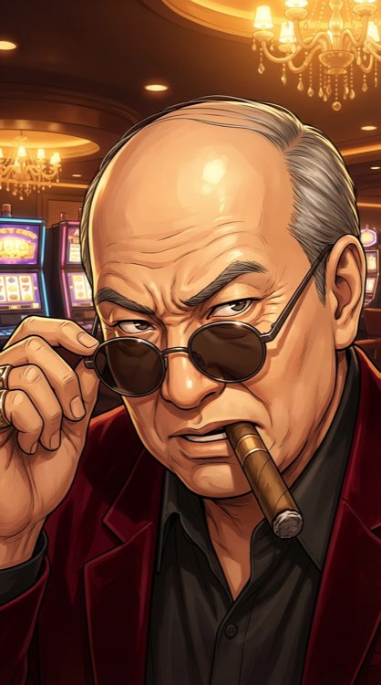
老K缓缓摘下墨镜。我第一次看到他的眼睛。
锐利。像鹰。像那种在高空盘旋了很久，终于发现猎物的鹰。
"有意思。"他把墨镜放在桌上，声音里多了一种我听不懂的东西，"来，玩点真的。"
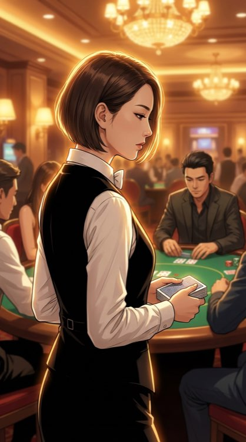
他打了个响指。原来的荷官默默退下，换上来一个女人。
短发齐耳，瓜子脸，表情冷淡得像冬天的湖面。黑色制服，白色领结，手里的新牌组像是她身体的延伸。
苏晴。我后来才知道她的名字。但此刻，她只是"那个让空气变冷的女人"。
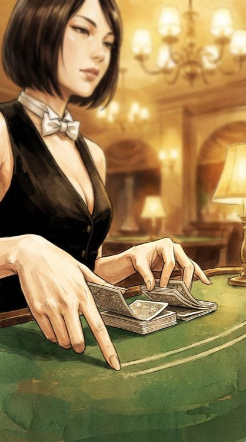
她开始洗牌。手法行云流水，快到几乎看不清。
但在整理牌堆的时候——她的食指在桌面上划了两下。很轻，很快。如果不是我常年写代码训练出的视觉捕捉力，根本不会注意。
那是……信号？给谁的？给我？
我选择不回应。但我记住了。我的概率之眼告诉我：这个女人身上的变量，比整副牌还复杂。
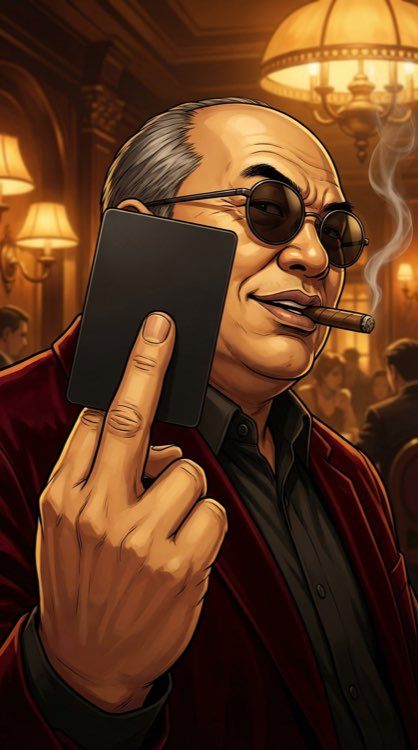
"下一局，赌注翻十倍。"老K从西装内袋掏出一张黑色的卡片，在手指间翻转。
"而且——"他把卡片拍在桌上，"输了，不只是钱的事。"
我盯着那张黑色卡片。脑中的概率之眼自动启动，试图分析——
[错误：数据不足]
[无法计算]
[未知变量超出模型范围]
[无法计算]
[未知变量超出模型范围]
第一次。我的概率之眼——失灵了。
▸ 第二章 · 升级赌注 ◂
黑色卡片背后藏着什么？苏晴的信号意味着什么？
当概率不再可计算，我该怎么赌？
当概率不再可计算，我该怎么赌？